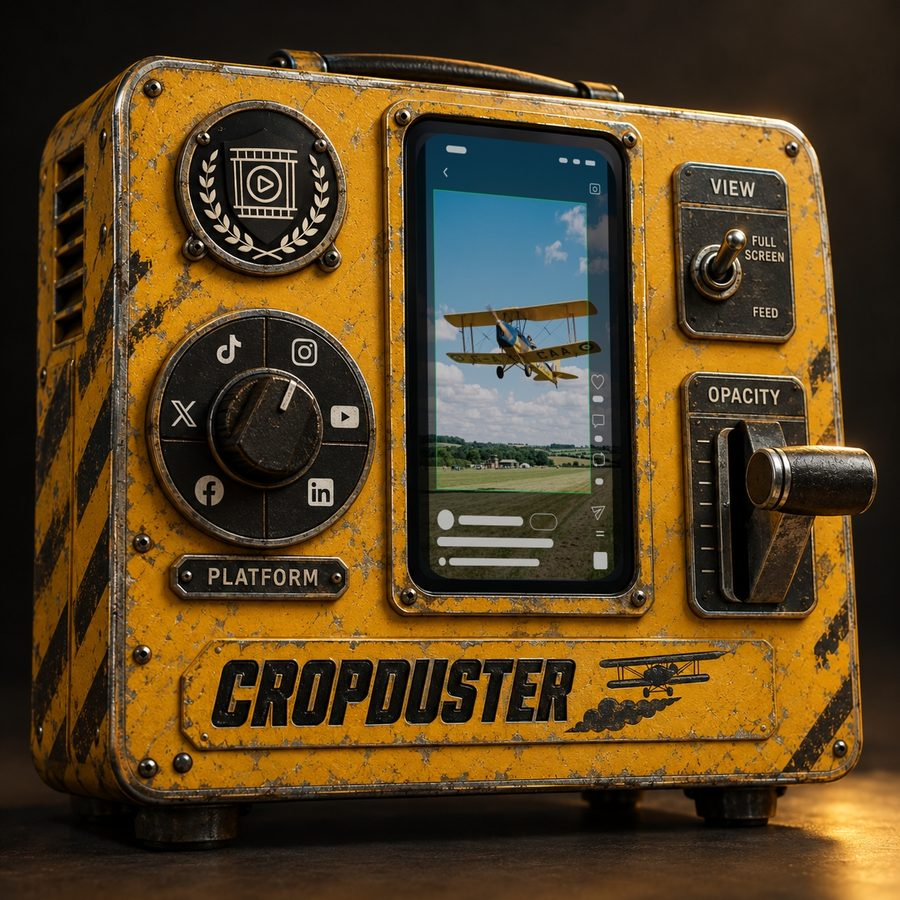
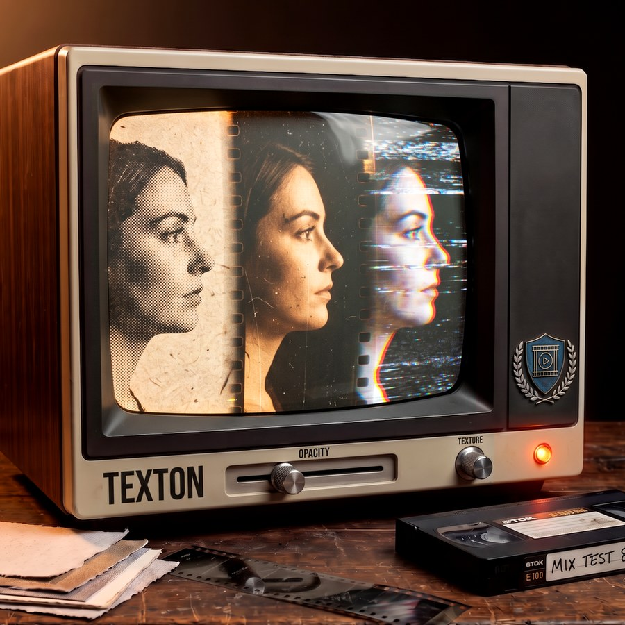

DaVinci Resolve · Premiere Pro
Small tools for video editors.
Tools I build for my own edits and release once they hold up in real work. Every download comes with a one page install guide.

Cropduster
v1.4Social safe zones
DaVinci Resolve and Premiere Pro
Free
Chatterbox
v1.0.3Social comment cards
DaVinci Resolve and Premiere Pro
Free

Texton
Texture and halftone
DaVinci Resolve
Soon